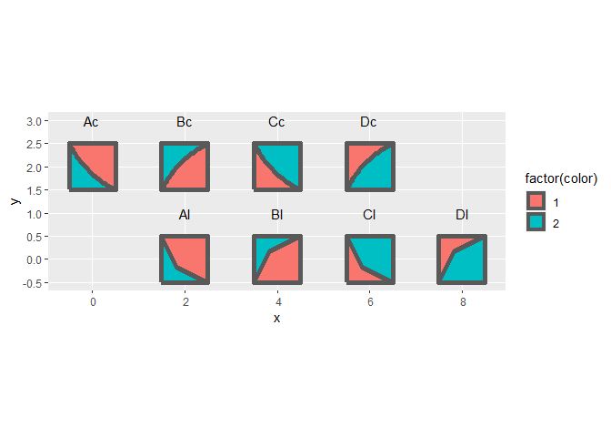

This package implements the multi-scale Truchet tiles of Christopher Carlson as explained in this blog post. This implementation uses the package {sf} to create and manipulate spatial objects. Two functions are used to create tiles and then to arrange the tiles in a mosaic. Since the tiles and mosaics are simple features, they can be plotted using {ggplot2} and geom_sf(). In addition, further manipulations of the tiles (such as buffering) can be done using the functionality of {sf}.
Installation
You can install the development version of truchet from GitHub with:
# install.packages("devtools")
devtools::install_github("paezha/truchet")Example
Once installed, the package can be loaded in the usual way:
library(ggplot2)
library(dplyr)
#>
#> Attaching package: 'dplyr'
#> The following objects are masked from 'package:stats':
#>
#> filter, lag
#> The following objects are masked from 'package:base':
#>
#> intersect, setdiff, setequal, union
library(truchet)Currently, these are the tiles that are implemented.
Tile of type “d” or “\” and “/” in Carlson’s notation.
Using function st_truchet_p() with type “d” produces a data frame with the elements of two tiles, diagonal left (“\”) and diagonal right (“/”). In addition to the geometry of the spatial elements of the tiles, the data frame includes identifiers for tiles (i.e., tile 1 is “\” and tile 2 is “/”) as well as colors.
st_truchet_p(type = "d") %>%
ggplot() +
geom_sf(aes(fill = factor(color))) +
facet_wrap(~tile)Tile of type “-” or “-” and “|” in Carlson’s notation.
Using function st_truchet_p() with type “-” produces a data frame with the elements of two tiles, horizontal (“-”) and vertical (“|”). In addition to the geometry of the spatial elements of the tiles, the data frame includes identifiers for tiles (i.e., tile 1 is “|” and tile 2 is “-”) as well as colors.
st_truchet_p(type = "-") %>%
ggplot() +
geom_sf(aes(fill = factor(color))) +
facet_wrap(~tile)
Tile of type “f” in Carlson’s notation.
Using function st_truchet_p() with type “f” produces a data frame with the elements of four tiles, corresponding to “fne” (tile 1), “fsw” (tile 2), “fse” (tile 3) and “fnw” (tile 4) in Carlson’s notation. In addition to the geometry of the spatial elements of the tiles, the data frame includes identifiers for tiles and colors.
st_truchet_p(type = "f") %>%
ggplot() +
geom_sf(aes(fill = factor(color))) +
facet_wrap(~tile)
Scale of tiles
Carlson’s tiles are designed to work at multiple scales. At the moment, the function to create tiles supports scale 1 (the tiles are squares with sides of length 1) and scale 1/2 (sides of tile are of length 1/2). Argument scale_p can be used to select the scale of the tiles (the default is 1). Notice that the colors alternate at each scale.
st_truchet_p(type = "d", scale_p = 1/2) %>%
ggplot() +
geom_sf(aes(fill = factor(color))) +
facet_wrap(~tile)Assembling a mosaic
The tiles can be used as inputs to create mosaics using function st_truchet_ms()
This example shows a single tile:
tiles_1 <- st_truchet_p(type = "d")
summary(tiles_1)
#> color tile geometry
#> Min. :1.000 Min. :1.0 MULTIPOLYGON:2
#> 1st Qu.:1.250 1st Qu.:1.0 POLYGON :4
#> Median :2.000 Median :1.5 epsg:NA :0
#> Mean :1.667 Mean :1.5
#> 3rd Qu.:2.000 3rd Qu.:2.0
#> Max. :2.000 Max. :2.0This type of tile produces two distinct tiles. Use only 1 type to create a mosaic:
mosaic <- st_truchet_ms(tiles_1 %>%
filter(tile == 1))Retrieve the “container” for the mosaic and the mosaic:
container <- mosaic[["container"]]
mosaic <- mosaic[["mosaic"]]Plot:

Use the two tiles of this type
mosaic <- st_truchet_ms(tiles_1)
container <- mosaic[["container"]]
mosaic <- mosaic[["mosaic"]]
ggplot() +
geom_sf(data = mosaic,
aes(fill = factor(color)),
color = NA)
Combining tile types
Various tile types can be combined:
tiles_1 <- rbind(st_truchet_p(type = "d"),
st_truchet_p(type = "-") %>%
mutate(tile = tile + 2))Note that the identifier for the tile needs to be updated for the second set of tiles, so that the mosaic assembler knows all the different types of tiles provided. Create a mosaic and plot:
mosaic <- st_truchet_ms(tiles_1)
container <- mosaic[["container"]]
mosaic <- mosaic[["mosaic"]]
ggplot() +
geom_sf(data = mosaic,
aes(fill = factor(color)),
color = NA)
Combining tiles of different scales
Tiles of different scales can be combined in a single mosaic:
tiles_1 <- st_truchet_p(type = "f")
tiles_2 <- st_truchet_p(type = "f", scale_p = 1/2)The tiles are placed on a regular grid with spacing 1-by-1. When tiles at scale 1/2 are used instead of 1 tile four of them are used to cover the unit square. The parameter prop controls the proportion of spots in the grid are used for tiles at scale 1 (the default is 0.5):
mosaic <- st_truchet_ms(tiles_1, tiles_2)
container <- mosaic[["container"]]
mosaic <- mosaic[["mosaic"]]
ggplot() +
geom_sf(data = mosaic,
aes(fill = factor(color)),
color = NA)
In this next plot the proportion of tiles at scale 1 is increased:
mosaic <- st_truchet_ms(tiles_1, tiles_2, prop = 0.85)
container <- mosaic[["container"]]
mosaic <- mosaic[["mosaic"]]
ggplot() +
geom_sf(data = mosaic,
aes(fill = factor(color)),
color = NA)
And decreased:
mosaic <- st_truchet_ms(tiles_1, tiles_2, prop = 0.25)
container <- mosaic[["container"]]
mosaic <- mosaic[["mosaic"]]
ggplot() +
geom_sf(data = mosaic,
aes(fill = factor(color)),
color = NA)